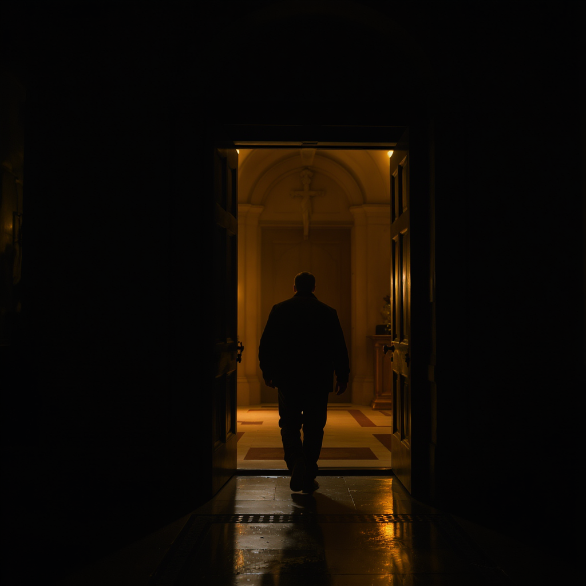

TESTEMUNHO
LUCAS 15:20
Ele voltou pra igreja
depois de 10 anos.
Por causa de um story.
Jesus contou a parábola do filho pródigo pra mostrar isso: não importa quanto tempo você ficou longe, o Pai está de braços abertos esperando.
Compartilhe se alguém precisa voltar
@ancoradealma